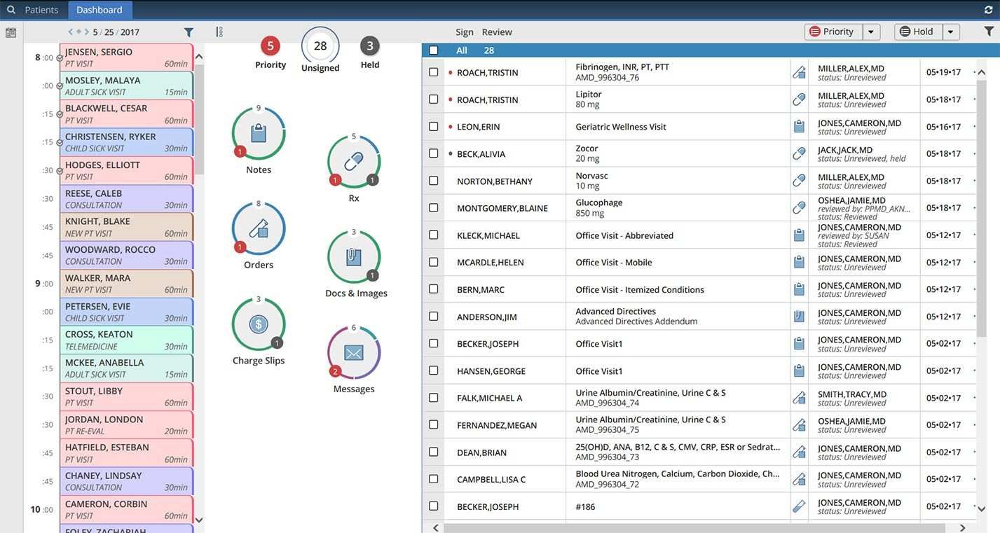
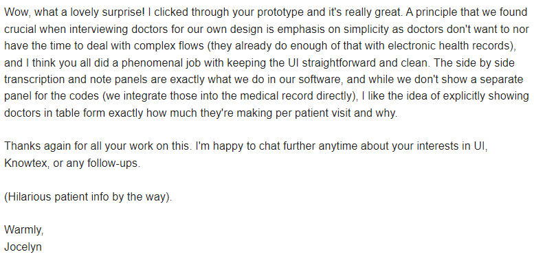
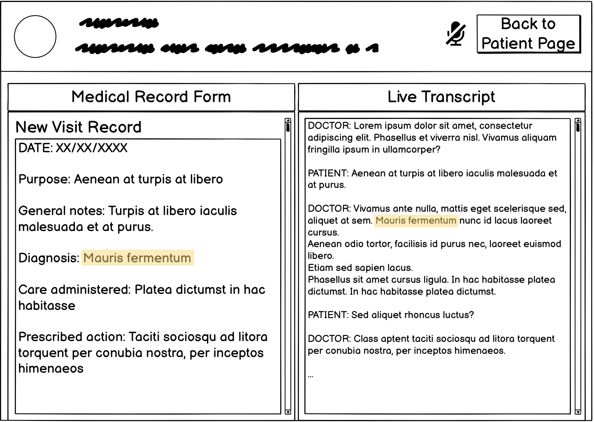
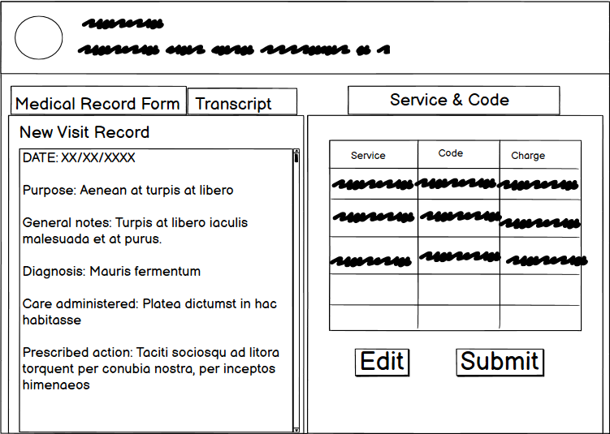
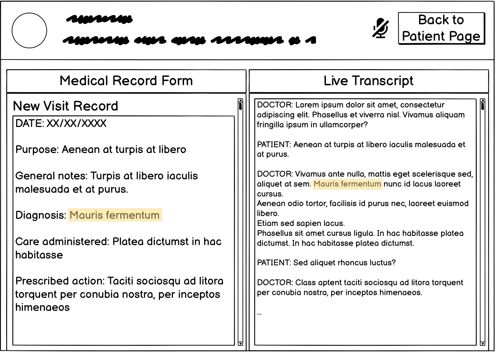
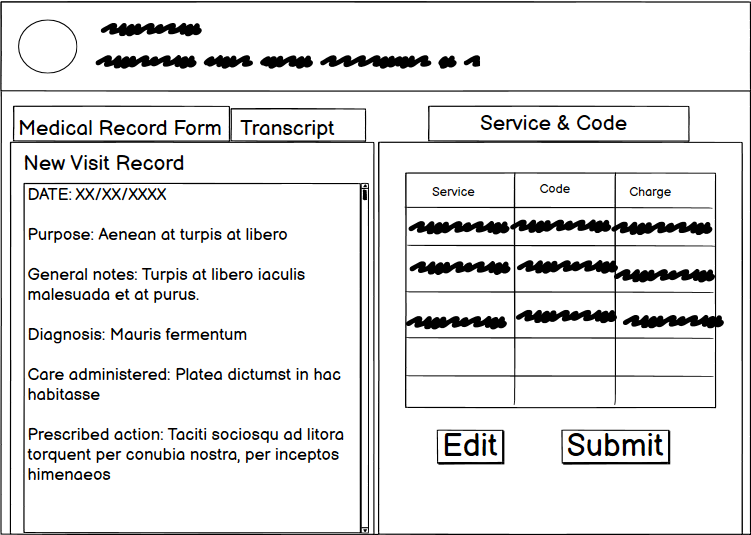

Provide a high-fidelity design of Knowtex's product based on its concept
Background
Telehealth has picked up during the COVID-19 pandemic,
and more medical practices start to integrate online patient visit into their business.
At the same time, many doctors and hospitals still use hand-written files for records.
Also, doctors need to assign medical codes to services provided for insurance purpose.
With the growing complex medical code system, assiging codes become a laborous task that
is time-consuming and inducive to mistakes.
According to a MyMedicalSore report,
inaccurate medical coding and erroneous billing cost Americans more than $2 billion annually,
and about 12 million Americans are misdiagnosed each year.
The inefficicent system is costly and contributes to burn-outs among medical professionals.
Knowtex is a startup that aims to use artificial intelligence
and voice recognition to help doctors take better visit notes
and more easily assign diagnosis and service medical codes.
Its goal is to ultimately allow doctors to be able to fully
focus on their patients in visits,
while the Knowtex AI application takes notes on the visit.
Challenge
My team aims to create a high-fidelity mock-up of Knowtex's product,
which needs to have a smooth and intuitive workflow.
We also need to make key design decision with respect to video and audio recording,
patient record storage, AI note taking, and medical codes assignment.
Ultimately, this application should be an effective assistance to doctors,
rather than an administrative burden.
Research
Understanding the Audience
To determine what functionalities this application should provide,
We want to get a better understanding of the needs and wants of the
target audience for the applicastion. In this case,
the target audience would be medical professionals with online patient visits.
Having had conversations with friends and relatives working in the medical field,
our team and I summarized key charactersitics of our potential users, and those are listed below.
Doctors with online patient visits
Says
"There are so many records..I just want to get this done with"
"We should have a better system"
Thinks
Where is the allergy information of this patient?
This visit has 10 services! What are the corresponding codes again?
Feels
Frastrated by looking up and assigning medical codes
Exhausted by a long-day of patient vists
Wants
Want to dedicate most attention to patients to make it an overall positive experience for both parties
Hope the note-taking process is easy, fast, and error-free
Want to have patient records "at hand" while all the records are neatly organized
Otter.ai records meetings,
allows users to highlight and takes notes on a real-time transcript,
and generates an automated, sharable summary.
It follows a simple white and blue design,
and my personal experience with Otter suggests that it has an intuitive workflow.
Healthcare Admin Software: Electronic Health Record (EHR)
Existing EHR system are often desktop/web-based applications.
As shown in the photo, they are crowded with information, including schedule, patients information, and more.
While providing all the necessary information for medical records,
such EHR does not support online visit and are hard to learn.

Design
Based on our research and analysis of audience and precedent work,
we settled on a simple yet professional design style,
incorporating elements such as calendar and patient information from traditional EHRs,
and audio transcript and minimalistic style from products such as Otter.ai.
Each member of our team made a set of rough sketches representing our initial visions,
and we integrated our ideas into one uniform design,
the low-fi and high-fi prototype of which are presented below.
We paticipated in a group critique session where our classmates experimented with our prototype and provided feedbacks,
the summary of which can be found below.
The group was split on whether adding symbols to buttons could make
the page less dense and easier to navigate,
or whether keeping the buttons with text labels
gave the application a more official, medical feel.
Users should be able to access the voice calibration page from other pages
(such as in the middle of a visit, in case the system stops working).
Locations of buttons felt unintuitive or unpredictable, with “back” buttons appearing in different locations on different pages.
Add options of editing or deleting past records.
Final High-Fi Design
Design Choices: Response to Critiques
Adding symbols to button or not
We added some symbols to certain buttons
(like the log out button),
but largely decided to keep — but simplify —
the text on buttons,
hopefully keeping the same formal feel while
making it faster to navigate.
Access voice calibration from different locations
We added a “re-calibrate voice recognition” button
to the record in-progress page.
Improve button locations
We shifted the locations of buttons to hopefully
clarify flow,
while keeping the “back” button in the top right of
every screen.
Edit / Delete Past Records
The reality of the healthcare system is that
once records have been published to a patient’s
medical record, they may not be altered or removed.
With this in mind, we chose not to allow editing / deleting a record after submission.
Instead, we added warnings to the interface to
more clearly specify to users that once published,
records cannot be edited or deleted.
We uploaded our final high-fi prototype to a user-testing website,
where we assigned users 4 tasks and recorded their process of navigating our prototype
and completing the tasks.
We asked the users to provide feedbacks and criticisms.
User Testing
Videos of Three Users Navigating Our Prototype with Given Tasks
Tasks Assigned to Users
Calibrate the live voice transcription system
Create a new visit record for John Dough’s 9-10am visit on Thursday, May 5th
Edit and save the Service & Code form (SC form for short)
Complete and publish the Visit Record and Service & Code forms to John Dough’s medical record
User Feedback Analysis
Users have provided us with helpful feeback with respect to functionality,
design, and workflow. Below is my summary of users' suggestions.
Improvement to the Workflow
Making the location of the voice calibration button more intuitive;
Reducing to number of highlights, which can be distractive;
Adding buttons of same functionality to multiple tasks instead of using one button for all;
Limiting the number of buttons and options on various screens.
Go Beyond our Current Prototype
Making the prototype more responsive to input (limit of Figma);
Testing with medical professionals and improve learnability.
Email to Knowtex
We also emailed the Figma mockup to the Knowtex founders.
And here is their reply...

Reflection
Critique and Iterative Design
The experience involved multiple rounds of iterative design with peer critique and user testing.
Such cirtiques have revealed blind spots of design choices that none of the team members have noticed.
This taught me the importance of seeking and incorporating feedbacks from multiple perspectives when
designing a product.
Design of User Testing
A significant portion of confusion in user testing arose from illogical sequence of task assigned
that doesn't correspond to the workflow of our prototype.
Going forward, we will be more cautious about the design of user testing
so that it's more inducive to feedbacks on product itself.

 


